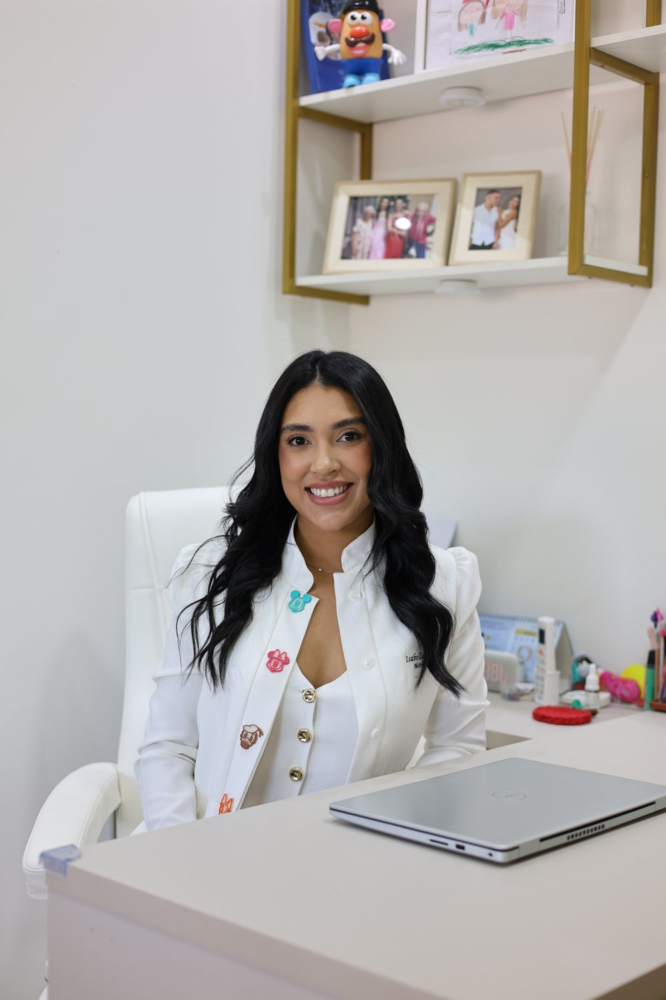
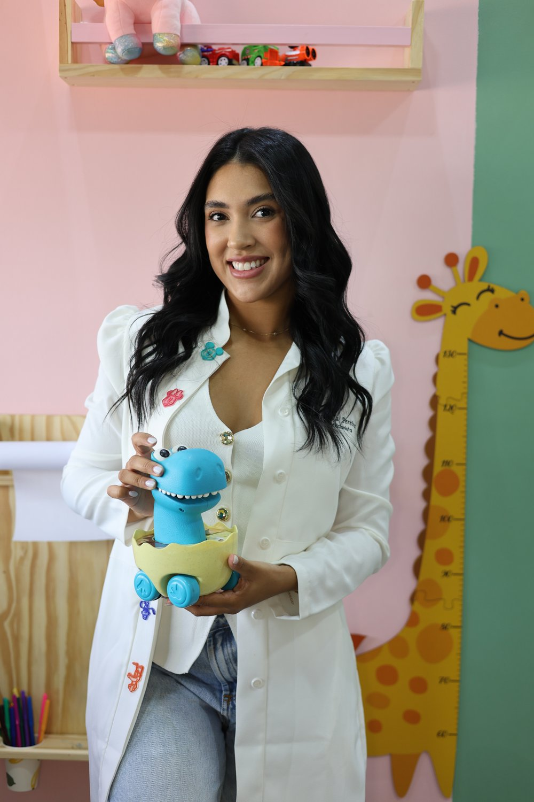

Uma relação leve e feliz com a comida, desde os primeiros anos.
Acompanhamento nutricional para bebês, crianças e adolescentes, baseado em evidência científica e em um olhar acolhedor para cada família.

Cuidado nutricional em cada fase da infância
Seletividade alimentar
Estratégias respeitosas para ampliar o paladar da criança, sem pressão e sem transformar a refeição em um campo de batalha.
Introdução alimentar
O início da alimentação do bebê com segurança e no tempo certo, construindo desde cedo uma relação positiva com a comida.
Doenças da infância
Suporte nutricional para crianças com diabetes, neuropatias, gastrostomia e outras condições, em conjunto com o tratamento médico.

Isabella Pereira
Formada pela Universidade Católica Dom Bosco (UCDB), com especialização em Terapia Nutricional Pediátrica pela UFRJ. Atendo bebês, crianças e adolescentes em todas as fases do desenvolvimento, unindo evidência científica a um olhar individual para cada paciente e sua família.
Tenho experiência em seletividade alimentar, introdução alimentar, dificuldades alimentares e acompanhamento de crianças com transtornos do neurodesenvolvimento, sempre respeitando o ritmo de cada uma.
O que as famílias dizem
Simplesmente maravilhosa. Tem um tato excepcional com os pequenos, sempre paciente e pronta a ajudar as crianças e suas famílias. Recomendo demais.
Profissional maravilhosa. Nos ajudou muito quando meu filho estava resistente à alimentação. Eu e minha família recomendamos de olhos fechados.
Perguntas que os pais mais fazem
Desde a introdução alimentar, por volta dos seis meses, até a adolescência.
Sim. A seletividade alimentar pode ser trabalhada com estratégias respeitosas e graduais, sem pressão ou traumas para a criança e para a família.
Sim, a maior parte das consultas pode ser feita online. A exceção é o atendimento "Escolinha da Nutri", que é presencial.
O atendimento é exclusivamente particular, o que garante o tempo e o acolhimento que cada paciente merece.

Vamos cuidar da alimentação do seu filho com leveza?
Agende uma consulta e comece a construir uma relação mais tranquila e positiva entre seu filho e a comida.
Agendar pelo WhatsApp